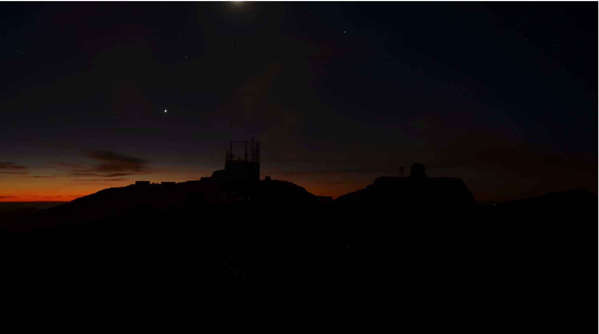

A Brief Overview of the Rubin Observatory
Adam Thornton
Created: 2020-10-24 Sat 17:31
A Brief Overview of the Rubin Observatory
Almost everything I am going to tell you can be found in the Science Book. It's quite dry and a little out of date, but it is the definitive reference for the general scientific community.
Lighter-weight resources: Andy Connolly Ted Talk and LSST Overview Paper and LSST Key Numbers.
Images, except when otherwise noted: Rubin Observatory/NSF/AURA

What is the Rubin Observatory?
It is the observatory that will carry out the Legacy Survey Of Space And Time.
It was formerly known as the Large Synoptic Survey Telescope (LSST). The name was changed in late 2019 to honor Vera Rubin.
She noticed that galaxies could not behave as they did if the mass was where the light was. Since understanding dark matter and dark energy is among the primary purposes of the survey, the renaming of the observatory in her honor was particularly fitting.
Vera Rubin
Vera Rubin, from a full-focal-plane image from the Symonyi Survey Telescope's camera (50 micron aperture).

Captured/resized by the author from Stanford's Camera Image Viewer (3.2Gpx to 102Kpx).
New Nomenclature
Most of what you will find on the Web still talks about "LSST". This will change over time, and we have adopted a more precise set of names for observatory components.
The Observatory as a whole is the "Vera C. Rubin Observatory"; "Rubin Observatory" for short.
The ten-year survey is the "LSST".
The telescope is the "Simonyi Survey Telescope".
Rubin Observatory is funded by NSF, DOE, and many public and private donors.
Please do not call it "VRO". Use "Rubin Observatory" instead.
Where is it?
It's in the Andes foothills, about an hour from La Serena, Chile (57 km), on Cerro Pachón. It is at approximately 2680m elevation.
Webcam view of the summit, May 2018
The building has considerably more roof now.

Why there?
This location is excellent for optical astronomy (including infrared) for several reasons:
It's in the Atacama Desert, which is extremely dry
8800 feet is much easier for humans to work at than 14,000 (Mauna Kea) but you're still above almost all the water vapor in the air. Expected mean seeing is 0.67" (remember this when we talk about the camera).
Long partnership between United States and Chilean astronomy
First joint observatories were built in the 1960s.
(There was also a lot of Cold War politics involved.)
Lots of existing infrastructure
Gemini South and SOAR are also on Cerro Pachón; it's 10 km from Cerro Tololo (CTIO). So we had power, comms, and a road to the mountain already.
What is the Rubin Observatory's purpose?
The first (and currently the only) mission of the Rubin Observatory is to execute the Legacy Survey Of Space And Time (LSST).
Legacy Survey of Space and Time
The LSST is a ten-year survey of the southern sky. Six bands, from near-ultraviolet to near-infrared (320-1080nm). We will get a complete picture of the Southern sky (in one band or another) every three nights (-ish, dependent on survey cadence). This will enable detection of faint transient phenomena with a much greater degree of completeness than ever before.
How do we do that?
We will make approximately 1000 visits a night. Each visit is either one 30-second or two 15-second exposures. Each picture is 3.2 gigapixels. Then we slew the telescope and do it again, all night, every night, for ten years, weather permitting.
When will we do that?
We are scheduled to begin science operations in October 2022.
However, COVID-19 has interfered (and continues to interfere) with our schedule, so timing is uncertain. We will be re-baselining the project and expect a six-to-twelve-month delay.
We have successfully taken pictures of the sky with the auxiliary telescope at the summit already.
Data Volume
We will collect 20-ishTB of pipeline-processed data a night. That's equivalent to all the data collected over the Hubble Space Telescope's 30+-year lifetime each week.
We will take over one trillion photometric measurements of astronomical sources.
The reduced catalogue (the primary science product) will be on the order of 15PB: tens of billions of rows, with complex structure, in a database.
The complete data set (with cailbrated exposures, templates, etc.) will approach half an exabyte.
The Symonyi Survey Telescope
The telescope is distinguished by several characteristics, imposed by the requirements of the survey. Chief among these are its compactness and its rigidity, which are necessary to be able to quickly and accurately repoint the telescope a thousand times a night and take a picture without the telescope swaying.
Physical Characteristics
The telescope will make 1000 thirty-second visits a night, with five seconds in between each visit to repoint and damp the telescope.
We have to move it from one location on the sky to another and have it settle in 5 seconds for a change of 3.5° elevation and 7° azimuth: 2 seconds of motion and 3 seconds to settle to 0.1".
In order to be able to move that quickly, the telescope has to be extremely rigid. The whole assembly weighs about 450 tons. The azimuth motors total 400 HP and the elevation motors 50 HP. The rim of the assembly is moving at about 30 mph when we are repointing.
Telescope optical design
This requires a very compact telescope. It is a three-mirror design, where M1 and M3 are part of the same piece of glass. This is the largest monolithic piece of glass ever constructed and seems likely to remain so given that newer telescope designs mostly use ceramic substrates.
Photon path

What can it see?
M1M3 is 8.4m diameter. That can collect a lot of photons.
Huge field of view: 3.5°. (JWST is 3.2' or so.) Seven full moons side-by-side or a CD at arm's length. If you calculate that out, each pixel is about 0.6".
Single-visit depth is magnitude 24.7. Stacked depth (to 5σ detection) over the survey is magnitude 27.5: 30/400 million times fainter than naked eye detection. (The detectors saturate at magnitude 16.)
It will be the deepest ground-based survey telescope.
Étendue
Étendue is the product of field of view and the primary mirror area. It's "how much light can a telescope collect in a given time?" The Simonyi Survey Telescope's étendue is 319 m²°², more than an order of magnitude more than any other instrument. Hence: wide, fast, deep.
Field of View simulated image
Picture by Nate Lust (Princeton University) with data from the HSC collaboration.

(pointing at the Moon would be really dumb, but not as dumb and dangerous as pointing at the Sun)
Camera design
Currently the largest (in pixel count) digital camera ever made. Made at SLAC. About the physical size of a minivan.
3.2 Gpx, in 189 sensors, divided into 21 rafts (plus four wavefront sensor rafts). The first full-focal-plane images have just been made (September 2020): space.com article, Stanford press release.
374 4K HDTVs to display a complete image. That'd tile half a basketball court. Remember: 1000 of those images are produced a night.
Camera picture

Active (not adaptive) optics
We use active optics to sharpen the picture. These are a system of actuators to (on a timescale of about a second) compensate for mirror deformation caused by temperature fluctuations, wind, et cetera.
We cannot use adaptive optics (much higher frequency, order of 100Hz) to compensate for atmospheric distortion as many narrow-field telescopes do, because our field of view is large and the air within the cone of sight is nowhere near homogeneous.
Observatory Cost
Total construction cost is about a half-billion (2013) dollars.
Camera: about $165 million.
M1M3: about $25 million.
Operations: about $35 million/year (or a dollar a second). About another half-billion over survey lifetime, factoring in commissioning time.
Grand total, one billion dollars in round numbers.
What science will we do with the Rubin Observatory?
There are four major pillars of the LSST research program:
- Comprehensive solar system survey.
- Milky Way structure and stellar content. We should observe about 10 billion stars, mostly within the Milky Way.
- Transient phenomena at optical wavelengths. AGNs, SN1Ae, visual confirmation of LIGO detections…
- Dark Energy and Dark Matter. Is the Hubble Constant the same in every direction? Only 4% of the mass/energy budget of the universe is baryonic matter and EM radiation. What's the rest of it?
Solar System
- Congressional mandate to detect 90% of PHAs: objects 140m diameter or larger by 2028. The LSST is a major component of that. 140m is a regional disaster, not a dinosaur-killer. We expect to find about 100,000 Near Earth Asteroids (not all of them PHAs).
- We also expect to find about 5.5 million Main Belt Asteroids, 280,000 Jovian Trojans, and 40,000 Trans-Neptunian Objects.
- "Deep, Fast, and Wide" is ideal for finding faint small solar system objects that move up to the order of degrees a night.
- Interplanetary coronal mass ejection and its interaction with comets.
Milky Way
- Very low mass stars and brown dwarfs in the local neighborhood.
- Systematic survey of Southern Hemisphere star clusters.
- Roughly 10 billion main sequence stars mapped in our galaxy out to 100kpc, and metallicity over the same volume (because 200 million of those stars will be near turn-off main sequence).
- Much better view of clumps and streams within the Galaxy (bulge and disk) and its halo.
Transient Phenomena
- Much better characterization of Cepheid variables, enabling more precision of the distance ladder.
- Vastly more SN1Ae than observed before, out to the limits of the observable universe.
- Quieter star-death events than SN1Ae: intermediate-mass collapse without remnant ("macronovae"), core-collapse straight to black hole, mergers of exotic objects.
- This is the perfect instrument for optical followup of LIGO events. LIGO says "it's over there somewhere"; even without doing a special pointing, we have a picture of "over there" (assuming Southern Hemisphere) every three days.
Dark Matter and Dark Energy
- We will observe a great many quasars, many of which will be gravitationally lensed by intervening galaxies: the six bands make it possible to precisely measure the delay between lensed images. That in turn gives us a picture of the mass in the lensing galaxy, which tells us where the dark matter is.
- Weak (statistical) lensing at cosmological scale: galaxies are, presumably oriented randomly with respect to us, with no bias. So if in a (large) region, we see that more appear elliptical in one direction than in another, we can infer the existence of a lens, and therefore mass, between us and them.
- The improvements in the distance ladder from lensing and SN1ae can let us constrain the Hubble Constant's value (and its evolution over time, which is presumed to be a linear function of proper distance) more precisely. That will let us rule out some dark energy theories.
- And of course if the Hubble Constant is not (statistically) constant across the sky at a given proper distance, that's a Nobel for someone.
A few mind-blowing numbers
We should detect 10 to 40 million AGNs (quasars) over the survey lifetime.
300,000 supernovae per year. Current rate, across all instruments, is 7000 a year. One supernova goes off in a Milky Way-sized galaxy every few hundred years. One explodes in the observable universe once every ten seconds.
About 10 billion galaxies, and about 10 billion stars. So everyone can have one of each, with plenty to spare.
If I did my math right, the linear distance spanned by a pixel (0.6") at the limit of the observable universe (comoving distance: 46.1 billion light years) is about 134,000 light years. So a Milky Way-sized structure in the early universe would just about span a pixel in our detector.
Who gets to use this?
- All astronomers affiliated with US or Chilean institutions.
- All astronomers affiliated with institutions that have bought into the project either with money or with in-kind contributions (labor, software, et cetera).
- Their collaborators, so pretty much all professional astronomers who have friends, so everyone except a few of theorists.
- But after two years, everyone. (Possibly four years after collection: one year for processing, so if data is collected early 2025, it won't be published as part of the catalogue until the end of 2026, and won't be released to the public until the end of 2028.)
Data availability
There are three levels of "data products" that will come out of the survey. Effectively, they are alerts, catalogues, and studies.
Level 1
Level 1 products are alerts: something has changed significantly relative to its historical brightness or position. We have to issue these within 60 seconds of the shutter closing, and they can be consumed by anyone with data rights. We've kept this simple: anything that is present, and wasn't before, or isn't, and was before, with a certainty of 5σ (that is, p-value of 1 in 3.5 million), done with an image-subtraction algorithm.
Level 1 volume
It's an enormous firehose: on the order of 10 million alerts a night. (So, statistically, three of those will just be very unlucky noise, not real events!) There will therefore be selective brokers (community-written, not Rubin Observatory-supplied) that filter the Rubin-provided stream with further processing to determine what class of event an alert is, and pass selected alerts downstream. Those will not have sub-minute latency.
Level 2
Level 2 products are our annual catalogues. Each year, we have to reprocess all the data collected thus far, in order to get our coadded (stacked) data correct. This too is immediately available upon production to people with data rights, and two years later for the public.
Level 1 and Level 2 products are, of course, mostly automated, and the source code for their production will be publicly available.
Level 3
Level 3 products are things derived from the first two categories to support particular science goals. This is generally "what I'm writing the paper about" and will usually remain proprietary to the group producing the research.
EPO
Education and Public Outreach will be coordinating curricula (from middle school to college astronomy courses) and organizing citizen science projects (think Zooniverse). As someone interested in the project who is not a professional astronomer, I sympathize with their aims.
What's my role in all this?
I work in the Science Quality and Reliability Engineering (SQuaRE) team, within the Data Management organization of the Rubin Observatory. My particular focus is the interactive notebook aspect of the Science Platform.
I have worked in IT as a system administrator, software developer, consultant, software engineer, and many other roles, for more than 30 years.
Unsolicited Avuncular Advice: find a job doing something you like, because it's much easier to get good at something you enjoy than something you hate.
Neither of my degrees are in scientific or engineering fields.
I have never taken an astronomy course.